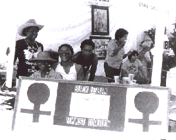

| HOME | SITE MAP |

Black Lesbian Feminist Coalition. 1980s.
1955
Daughters of Bilitis, first lesbian organization in the U.S.,
founded by 8 women, including a Pilipina and a Chicana.
1959
At 29, Lorraine Hansberry wins the NY Drama Critics Circle Award
for Best Play of the Year for "Raisin in the Sun"
1961
[Jose Sarria, a Nicaraguan, performs political numbers in San
Francisco drag bar. He runs for supervisor as an out gay man. He
loses, but raises consciousness city-wide]
1963
[Bayard Rustin, gay African American, organizes the legendary
March on Washington where Martin Luther King made his "I Have a
Dream" speech].
1966
Ernestine Eckstein (pseudonym), African American civil rights activist and
member of DOB is interviewed and is on the cover of The Ladder, DOB's
national publication.
1971
The Lesbian Tide is founded in Los Angeles. It's the first lesbian
periodical to use the "L" word in its title. The editor, later
publisher is Jeanne Cordova, an activist of Mexican/Irish
heritage.
1972
Third World Gay Revolution (NYC) publishes statement in Out of The
Closets, an early lesbian/gay anthology.
1974
Combahee River Collective begins meeting.
Margaret Sloan-Hunter is Chairwoman of the 2000 member National
Black Feminist Organization.
1975
Gay American Indians organized in San Francisco. Barbara Cameron
is co-chair.
American Psychological Association reverses its negative stance on lesbians (and gays). Chicago African American lesbian and psychologist E. Kitch Childs is among those to be credited for the change.
1976
The Reverend Dolores Jackson co-founds Salsa Soul Sisters (NYC).
(Salsa Soul is now African Ancestral Lesbians United for Societal
Change)
1977
Azalea: A Magazine for Third World Lesbians begins publication in
New York.
Betty Powell and Nadine * are interviewed for award-winning film
"Word is Out:Stories of Some of Our Lives."
Donna Levy AFAM lesbian wins custory of her deceased lover's
daughter.
Cicelia Gonzales (sp?) Chicana lesbian wins battle to be released
from Colorado state hospital where she was sent for shooting her
brother.
Formerly het commune Limesaddle in Northern California, becomes wimmin's
land and then the first wimmin of color land in the U.S.
1978
At the National Lesbian Feminist Organizing Conference in Los Angeles,
Lesbians of Color are voted 50% of the seats on the steering
committee.
Lesbians of Color (LA) is organized.
Third World Warriors speak their vision for La Luz in Lesbian
Connection.
1979
The First National Third World Lesbian and Gay Conference is held
in Washington, D.C., in conjunction with the First March on
Washington. Lesbians and gays of color lead the march.
Juanita Ramos is a speaker at the March on Washington
Seattle LOC publish the Lesbians of Color Quarterly.
National Coalition for Black Lesbians and Gays formed
"Combahee River Collective Statement on Feminism" first published.
Collective members include lesbian Barbara Smith.
1st Annual Third World Lesbian Writers Conference in NYC.
Black lesbian feminist Collective House operates in Alexandria, Va.
Conditions #5 is the Black Women's Issue and is co-edited by
Barbara Smith.
[gay African American activist Mel Boozer's name is placed in nomination
for Vice President of the U.S. at the Democratic National Convention].
1980
Gentle Waves, a Black lesbian group in Chicago forms.
1981
This Bridge Called My Back:Writings by Radical Women of Color is
edited by two lesbianas, and contains contributions by lesbians of
color.
Black lesbians:An Annotated Bibliography, the first on the subject
is published.
The West Coast Women's Music and Comedy Festival is disrupted by race and
class conflicts
1982
Merle Woo is denied employment at UC Berkeley due to her political
ideology and activities.
1983
Lesbians of Color Los Angeles, organize the National Lesbians of Color
Conference attended by 200 women of color.
Home Girls:A Black feminist Anthology edited by Barbara Smith
contains contributions by African American lesbians.
Deborah Johnson and Zandra Rolon, are refused service in a couples
booth at an L.A. restaurant. They file a lawsuit and win.
[After discussions with those who wanted to prevent a lesbian/gay presence at an important civil rights march, Coretta Scott King and other African American leaders announce support for lesbian/gay civil rights].
1984
Beth Brant edits the first anthology by North American Indian
women, A Gathering of Spirit.
Alberta Hunter, legendary blues singer dies.
Lesbianas Unidas (LA) is founded by latina lesbians from GLLU and other
latina lesbians. LU continues to sponsor an annual retreat.
1985
Anamika, a group for south Asian lesbians forms.
Before Stonewall (the movie), includes interviews with Mabel
Hampton, Jackie Cachero, Maua A. Ajanaku and Audre Lorde.
1986
Paula Gunn Allen's Sacred Hoop:Recovering the Feminine in American
Indian Traditions includes a chapter on lesbians in American Indian
cultures.
1987
Juanita Ramos edits the first Latina lesbian anthology:
Companeras:Latina Lesbians.
Between the Lines, the first Asian Pacific Islander lesbian anthology is
published by three API lesbians.
The First Lesbian Encuentro takes place in Cuernavaca, Mexico
LLEGO (national organization of lesbian and gay latinos) founded
1988
The first Gay American Indian anthology Living the Spirit,
contains contributions by several AI lesbians.
Asian and Pacific Islander Lesbian and Bisexual Women's Network
founded.
The Black Gay and Lesbian Leadership Forum is founded.
Several lesbians of color are members of the first lesbian sorority in the
world, Lambda Delta Lambda, established at UCLA (Los Angeles).
1989
Rompiendo El Silencio (Breaking the Silence) airs in NYC.
1990
Audre Lorde and Chrystos receive NEA grants.
Second Encuentro of Latina lesbians takes place in Costa Rica.
1991
Piece of My Heart:A Lesbian of Colour Anthology, the first of its
its kind, is edited by Makeda Silvera. It contains contributions
by both Canadian and U.S. lesbians.
Esto No Tiene Nombre published in Miami (until 1994).
Sherry Harris is elected to the Seattle City Council.
She is the first openly black lesbian elected to office in the U.S.
1992
Audre Lorde dies.
1993
Urvashi Vaid speaks at the March on Washington.
1995
Virtual Equality by Urvashi Vaid is published.
[Patria Jimenez is the first out lesbian elected to the Mexican Congress]
[Lesbian groups from various Latin American countries go to Beijing Conference. They include Tal Para Cual (Ecuador), Colectiva Neconi (Nicaragua), Colectiva Ayuquelen (Chile), Colectiva Ciquay (Dominican Republic), Las Lunas y Las Otras (Argentina), Entendidas (Costa Rica), Closet de Sor Juana (Mexico)]
Sources:
Alyson Almanac
Out in All Directions
Lesbian History Almanac
Conmocion
LHP files
Out/Lines
This chronology may be reproduced with the following attribution:
The Lesbian History Project/Internet Web Site
http://www-lib.usc.edu/~retter/main.html